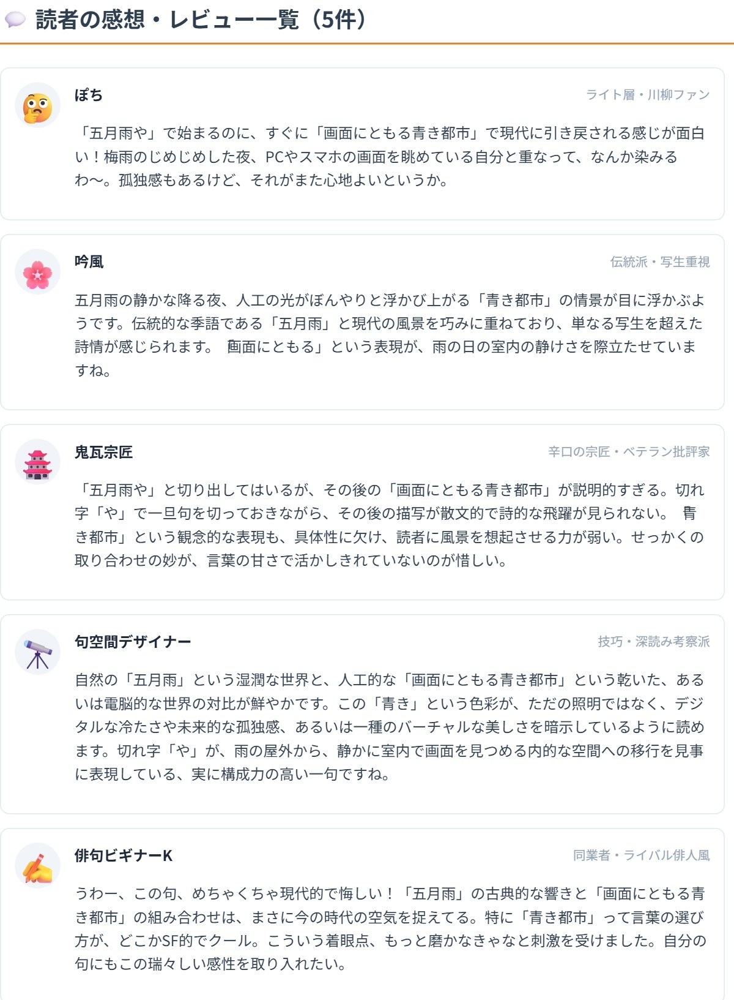

×

あなたの俳句や川柳を投稿すると、現代のSNSやWEB句会のタイムラインをシミュレートし、仮想の愛好家や宗匠からリアルな本音コメントが届きます。 「一句モード」では5人前後からピリッとした感想が、「句集モード」では20〜30人の大勢の読者から賑やかな感想欄が生成されます。
モードを選択し、俳句・川柳を入力して「投稿する」ボタンを押してください。

俳句・川柳に集まる読者感想タイムライン（イメージ）「扇風機 一人分だけ 回る部屋」という一句を投稿した際に届いたコメントの例です。
俳人や川柳ファンたちが集まっています。しばらくお待ちください...
Q. 厳しい指摘も含まれますか？
A. はい。「辛口の宗匠・ベテラン批評家」の視点を必ず含めているため、技術的な指摘を含むリアルな合評を再現します。
Q. 俳句・川柳どちらでも使えますか？
A. はい。作品の内容を判断し、俳句的な視点・川柳的な視点それぞれに応じたコメントが生成されます。
Q. 一句と句集、どちらにも対応していますか？
A. はい。モードを切り替えることで、一句単体への感想と、句集・連句全体への感想の両方に対応しています。
Q. どんな場面で使うとよいですか？
A. 句会やSNSに投稿する前のイメージトレーニングとして使うとよいでしょう。
「一人分だけ」がこの句のすべてですね。扇風機の大きさと部屋の静けさがじわじわ伝わってきます。夏の孤独を切り取った佳句だと思います
これわかりすぎる笑。一人暮らし始めた夏にこういう瞬間ありました。川柳っぽいあるあるなんだけど、ちゃんと寂しい
季語「扇風機」を使った現代の孤独の写生として良い出来。切れ字の工夫でさらに余韻が増せると思いますが、日常詠として完成されています
「回る部屋」という体言止めの終わり方が効いている。ぐるぐる回る扇風機が部屋全体をゆっくり回しているような視覚イメージが良い
これ川柳として読むと孤独のユーモアで最高なんですよね。俳句か川柳か区別しない読み方がいちばんこの句を楽しめる気がします